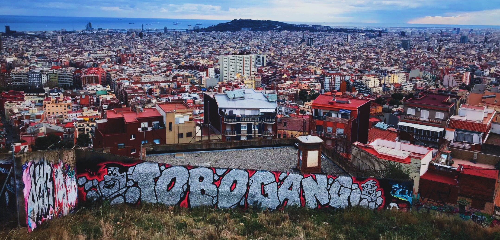

The Lights of Ibiza
March 26, 2018
The lights of Ibiza are typically those of night clubs. Smoke machines and base drops followed by motley colored laser beams shining directly on your retina. The lights that I found in Ibiza were something different, something unexpected. They got my heart rate up higher than any club or music festival has before. The light I saw in Ibiza was the sunlight that crisped my winter skin during a 3 on 3 beach football (soccer) match with some guys from Senegal. The lights I saw in Ibiza were the stars that shined much brighter far away from dense population centers; the stars that gave a faint glow to the white coats of the horses outside our bedroom door. The light I saw in Ibiza was the glow of a wood fire that we used to cook a pasta dinner and make tea. The lights that I saw gave sun to local preteens jumping off cliffs and old men bathing naked on an isolated beach. The lights I saw made it clear to me that I’m not a club dweller. Any day I’d rather jump off beautiful cliffs into a chilling blue sea, than jump around in dark rooms with sweaty strangers. I’m a man of the outdoors, of calluses on my feet and long bike rides through unpopulated areas. My spring break around the Mediterranean reminded me what to chase and what to leave behind.

Study Abroad, Part 1
March 8, 2018
It’s been about two months since I’ve made my new home in Barcelona, and I have about two months left until I return home. Rather than reflect on my whole experience and risk sounding incredibly cliche, I would just like to share my thoughts on a few lessons that have come about from my specific experiences.
Above all, I think I’ve learned a lot about habit. Habit is very comfortable. To let go of my habits, my daily routines, and the surroundings I have become accustomed to is a very difficult process. It occasionally leaves me feeling homesick or confused. In this difficulty, however, I have developed diversity in my life, learned to adapt to new situations, and learned how to develop good habits.
The diversity in my life came about in a very abrupt way, two months ago. I struggled to adapt to house norms, I struggled to speak the language, and I didn’t understand why my host mom scolded me so frequently. I can’t count the number of times I had to say “no estoy acostumbrado”. These experiences, although seeming unpleasant, helped me develop diversity of thought. I learned more about Spanish/Catalan manners (they can be very candid) and house norms (rewear your clothes a couple times, laundry is costly).
Learning to adapt to these situations was a lesson on its own. I felt at times helpless and frustrated. I felt like a teenager, with building resentment and frustration toward this difficult situation. In coping with these situations, I have found two useful tools. The first is meditation. Amongst all of the change, sitting in quiet and meditating has reminded me how much really can remain constant. The steady presence of my breath, my physical well being, and my time alone with my thoughts are all things that I value and can take with me wherever I go.
The other tool is self-expression. Through self expression, whether it be music, photography, a conversation with a friend, or writing in a journal, I am able to articulate my difficulties and witness them outside of my the confides of my mind. Many people consider self-expression as a means of projecting yourself to others, but I have learned it should origionate as a means of showing you to yourself. This allows the worries about the quality and content to ease, so I can express myself from an honest place. It’s exactly what I’m doing as I write this post. It does not need to be consumed, because my main purpose is to show these thoughts to myself, and that motivation feels genuine to me.
So, after breaking habits, creating new ones, and putting myself outside of my comfort zone, where has this left me? At my new home, I have adapted to different chores and such, improved my Spanish, and had some great conversations with my host mom. I feel like I have learned a lot about the importance of family, the concept of family, and have expanded my own family, as my host mom has treated me like one of her own. Outside of the house, I have become more comfortable traveling and being alone. I have seen art throughout Belgium and Spain, experienced the peculiar culture of Amsterdam, and seen the sun kiss the rivers of Lisbon and Sevilla. I have couch surfed, stayed in shitty hostels and nice hotels, and can travel a week with nothing but a small backpack. I have practiced maintaining a level head in a variety of environments. Breaking out of habits creating new ones, trying to express myself, I have expanded my character and what I’m comfortable with. I encourage you to do the same. It’s no great accomplishment, but I feel it is important in making my life more interesting and challenging.